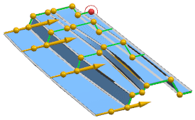
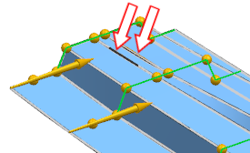
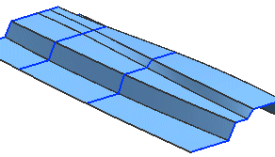
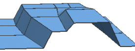
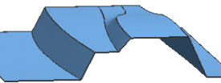

在对齐组的对齐列表中，选择根据点。
将计算各个截面的对齐点，并用直线将它们连接。

根据点对齐比参数对齐要好一些，但您想要更改截面1和2上的点的位置，以为上方斜直线提供更好的形状过渡。

在对齐组中，确保已激活指定点，拖动上图所示的对齐点，使之看起来与下图类似，然后点击确定。

将在这个部件中的尖角处形成单独的面。
在图形窗口中，双击您刚刚创建的曲面。
在设置的放样选项卡中，阶次为3。
在阶次输入框中键入1并点击确定。
旋转视图以便您的视图看起来如图所示。

注意到截面曲线间的曲面形状现在变为线性(阶次 1)，并且在截面处有新的面和边。
如果隐藏草图将可以看得更清楚。
再次双击曲面并将放样阶次修改为2。
曲面的形状现在变好了一些，并且在截面曲线处没有单独的面。

关闭所有部件。